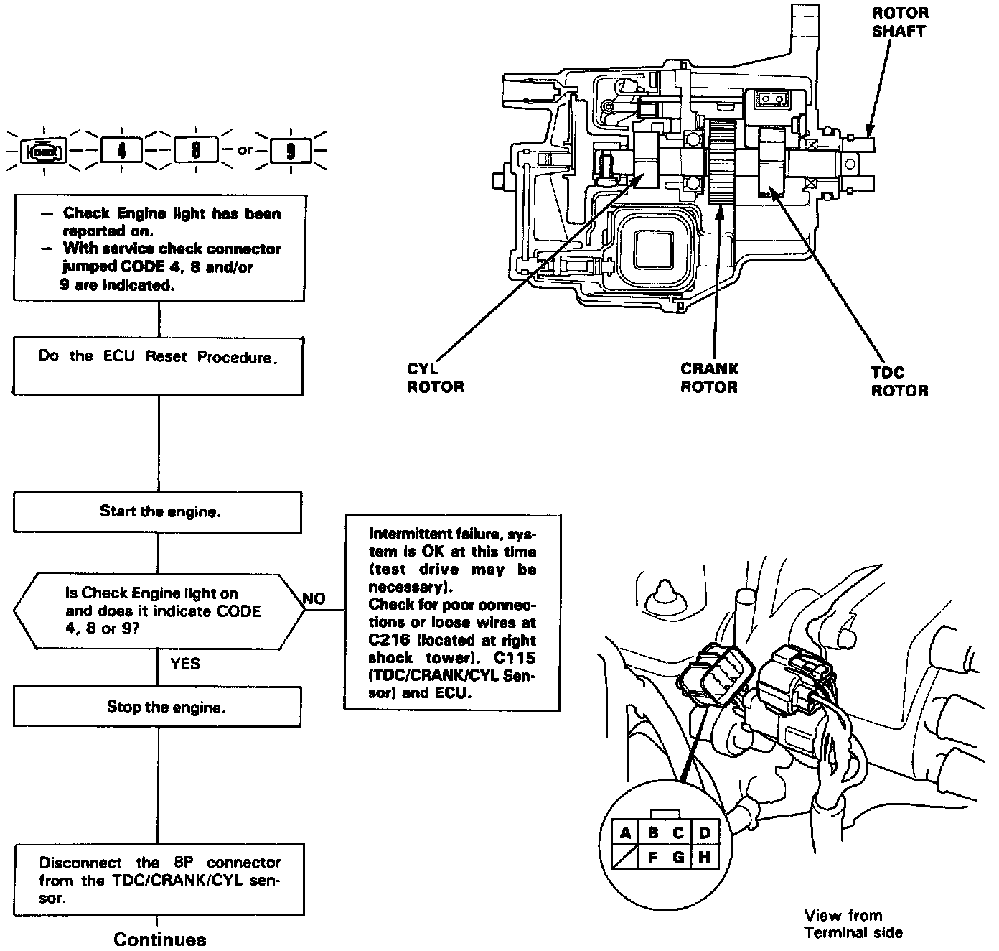
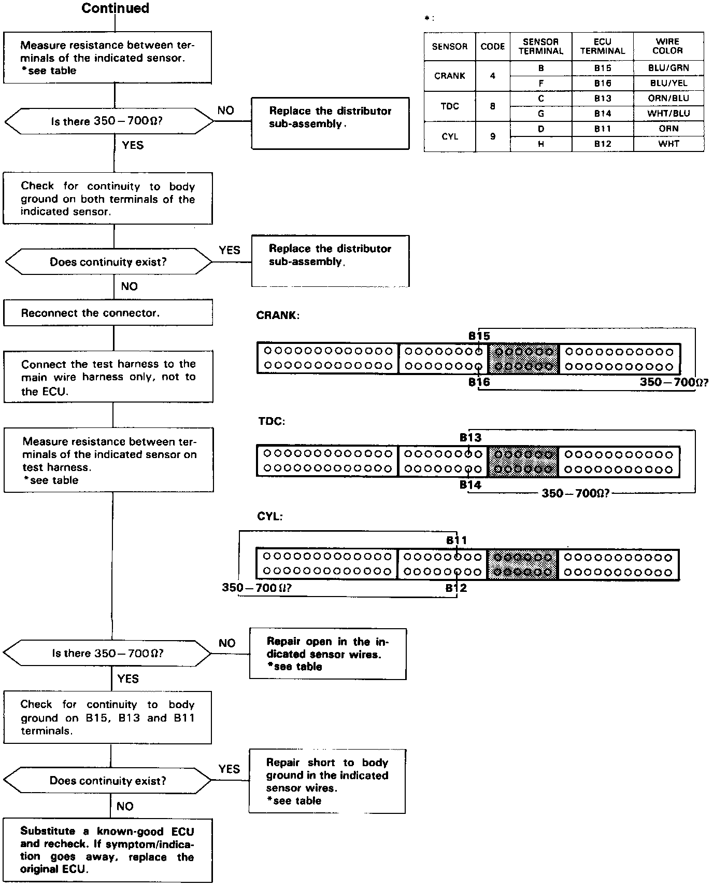

Operation CHARM
: Car repair manuals for everyone.
Home
>>
Acura
>>
1992
>>
Integra L4-1834cc 1.8L DOHC FI
>>
Repair and Diagnosis
>>
A L L Diagnostic Trouble Codes ( DTC )
>>
Testing and Inspection
>>
Manufacturer Code Charts
>>
Engine Control System
>>
DTC 4
DTC 4


Self-diagnosis Check Engine light indicates code 4: A problem in the CRANK Sensor circuit.
The CRANK sensor determines timing for fuel injection and ignition of each cylinder and also detects engine RPM.